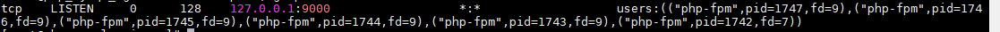
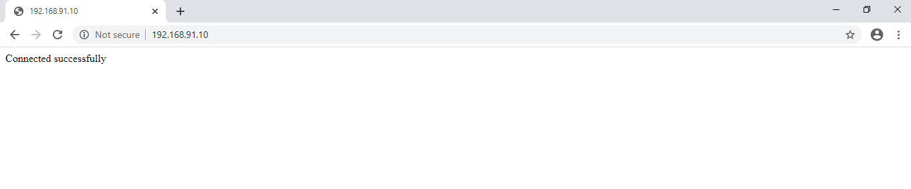

Php Nginx Mysql
PHP
This page shows how to install PHP 7.2 , latest Nginx, and Mysql 5.6 and how to deploy a sample web page. All the tutorial here is in Centos 7.
Let’s start with installing PHP 7.2. PHP is server-side scripting language. It is used for web development and can be embedded into HTML. PHP code is usually processed on a web server by a PHP interpreter implemented as a module, a daemon or as a Common Gateway Interface (CGI) executable.
Turn on EPEL repo on a CentOS and RHEL 7.x sever by typing the following command. EPEL repo stands for Extra Packages for Enterprise Linux Repository. It is a free and open source repository project made available to everybody by Fedora.
yum install epel-release -y
Install remi repo. It is a third-party repository created and maintained by a French guy called Remi. Remi repository is a free repository providing latest versions of software which are not available in CentOS installation and or repository by default. For example, if you want to install latest version of PHP, then you can get it via Remi repo.
yum install http://rpms.remirepo.net/enterprise/remi-release-7.rpm -y
Install yum-utils packages too. Yum-utils is a collection of tools and programs for managing yum repositories, installing debug packages, source packages, extended information from repositories and administration.
yum install yum-utils -y
Enable remi repo,
yum-config-manager --enable remi-php72
Install PHP 7.2,
yum install php72 -y
There are some module which are essential for running PHP. You can install them using following command,
yum install php72-php-fpm php72-php-gd php72-php-json php72-php-mbstring php72-php-mysqlnd php72-php-xml php72-php-xmlrpc php72-php-opcache php-cli -y
Find PHP version
php --version
List installed modules
php72 -m
(Optional) If you found some module are missing, you can install in the same way as below. In our demonstration we are going to connect to mysql database using PDO.
yum install php-pdo -y
We are going to listen php on default port 9000. Make sure following line is presented in /etc/opt/remi/php72/php-fpm.d/www.conf and not commented.
listen = 127.0.0.1:9000
Turn on PHP fpm for Nginx,
systemctl start php72-php-fpm.service
systemctl enable php72-php-fpm.service
(FPM) FastCGI Process Manager is a binary protocol for interfacing interactive programs with a web server. Verify that port 9000 should be listening by php-fpm,
ss -tupan | grep 9000
Output should be similar to,

Mysql
Now install MySQL Server 5.6 on same server.
MySQL is an open source relational database management system (RDBMS) based on Structured Query Language (SQL). it can be used in a wide range of web applications and online publishing.
login with root user in system. Download the rpm package, which will create a yum repo file for MySQL Server installation.
yum install wget -y
wget http://repo.mysql.com/mysql-community-release-el7-5.noarch.rpm
Install mysql-community-release-el7-5.noarch.rpm package. Noarch stands for no architecture. Like fonts, Documentations, also some packages like netconfig etc, which are not based on specific architecture.
rpm -ivh mysql-community-release-el7-5.noarch.rpm
By using yum command, now we will install MySQL Server 5.6 . All dependencies will be installed itself.
yum install mysql mysql-server -y
Start and enable the service,
systemctl start mysqld
systemctl enable mysqld
On newly installed MySQL Server, we generally recommend to use the command script. You have to just follow the instructions and set root password. The MySQL root user password is blank at initial.
mysql_secure_installation
login using,
mysql -u root -p
In our example, we will create database user ‘priya’ and assign all privileges to database ‘store’.
create database store;
CREATE USER 'priya'@'localhost' IDENTIFIED BY 'passwd';
GRANT ALL PRIVILEGES ON store.* TO 'priya'@'localhost';
flush privilages;
Type quit to exit.
Nginx
Let’s Install Nginx and see a demo page with php content.
NGINX is open source software for web serving, reverse proxying, caching, load balancing. In addition to its HTTP server capabilities, NGINX can also function as a proxy server for email (IMAP, POP3, and SMTP) and a reverse proxy and load balancer for HTTP, TCP, and UDP servers.
Install nginx using following command,
yum install nginx -y
Start and enable the service,
systemctl start nginx
systemctl enable nginx
In default it open the port 80 which is configured in its default configuration file /etc/nginx/nginx.conf Comment the following line,
# server {
# listen 80 default_server;
# listen [::]:80 default_server;
# server_name _;
# root /usr/share/nginx/html;
# # Load configuration files for the default server block.
# include /etc/nginx/default.d/*.conf;
# location / {
# }
# error_page 404 /404.html;
# location = /40x.html {
# }
# error_page 500 502 503 504 /50x.html;
# location = /50x.html {
# }
# }
Now, make a configuration file in the path /etc/nginx/conf.d/mydomain.conf You can give file name as your choice with conf extension.
vi /etc/nginx/conf.d/mydomain.conf
Add the following content. This will listen on port 80 and CGI pass to php listing on localhost port 9000.
server {
listen 80;
root /data/mydomain/www/public;
index index.php index.html index.htm;
server_name mydomain.com;
location / {
try_files $uri $uri/ /index.php$is_args$args;
}
access_log /var/log/nginx/access.log;
error_log /var/log/nginx/error.log;
error_page 404 /404.html;
error_page 500 502 503 504 /50x.html;
location = /50x.html {
root /data/mydomain/www/public;
}
# pass the PHP scripts to FastCGI server listening on 127.0.0.1:9000
location ~ \.php$ {
try_files $uri =404;
fastcgi_pass 127.0.0.1:9000;
fastcgi_index index.php;
fastcgi_param SCRIPT_FILENAME $document_root$fastcgi_script_name;
include fastcgi_params;
}
}
Make directory, mkdir -p /data/mydomain/www/public to keep php code.
vi /data/mydomain/www/public/index.php
Add following code to see a demo page.
<?php
$servername = "localhost";
$username = "priya";
$password = "passwd";
try {
$conn = new PDO("mysql:host=$servername;dbname=store", $username, $password);
// set the PDO error mode to exception
$conn->setAttribute(PDO::ATTR_ERRMODE, PDO::ERRMODE_EXCEPTION);
echo "Connected successfully";
}
catch(PDOException $e)
{
echo "Connection failed: " . $e->getMessage();
}
?>
Check nginx configuration using,
nginx -t
Reload the configuration,
systemctl reload nginx
Go to your browser and type your ip address. It should show following result.

Pratik Gautam pratikgautm@gmail.com